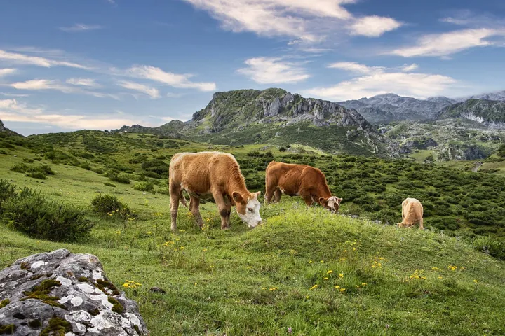

da dom 4 ott a ven 11 dic
Nuove Vie - Festival della Montagna
Nuove Vie – Festival della Montagna torna nell’autunno 2026 per la 7^ edizione con una rassegna di incontri, racconti, laboratori ed esperienze dedicati alla montagna e ai suoi molteplici linguaggi.
 Indicazioni
Indicazioni
- Costi e prenotazioni
- Costo non indicato · Prenotazione non indicata
- Programma
- Programma da verificare. Apri la fonte ufficiale per orari e possibili aggiornamenti.
- In caso di maltempo
- Nessuna indicazione specifica pubblicata.
- Note
- Acquisito automaticamente dalla fonte.
L’EVENTO
Descrizione completa
Nuove Vie – Festival della Montagna torna nell’autunno 2026 per la 7^ edizione con una rassegna di incontri, racconti, laboratori ed esperienze dedicati alla montagna e ai suoi molteplici linguaggi.
Un viaggio attraverso ambiente, natura, alpinismo, cultura e tradizioni, per riscoprire il legame profondo tra persone e paesaggio. Il programma alterna serate con protagonisti dell’esplorazione e dell’alpinismo, proiezioni, incontri e momenti di confronto. Non mancano attività pensate per i più piccoli, laboratori creativi, esperienze sul territorio e occasioni per stare insieme.
Particolare attenzione è dedicata ai temi della sostenibilità, della cura dell’ambiente e della valorizzazione dei luoghi. Le diverse iniziative invitano a guardare la montagna da prospettive nuove, tra memoria, cambiamento e futuro. Dalle valli dell’Astico alle montagne vicentine, Nuove Vie diventa così uno spazio di incontro, scoperta e partecipazione.
Un calendario diffuso per camminare, ascoltare, conoscere e condividere storie legate alla montagna e alle comunità che la abitano. Un invito a percorrere nuove strade, reali e simboliche, per vivere il territorio con curiosità, consapevolezza e meraviglia.
IL PROGRAMMA
Programma e orari
Appuntamenti raccolti dalle fonti elencate. Dove manca un orario, non è ancora disponibile in questa scheda.
Programma pubblicato
- 2026-10-04 — 2026-10-04 · 16:30:00
- 2026-10-11 — 2026-10-11 · 10:30:00
- 2026-10-16 — 2026-10-16 · 20:30:00
- 2026-10-17 — 2026-10-17 · 17:30:00
- 2026-10-25 — 2026-10-25 · 11:00:00
- 2026-10-30 — 2026-10-30 · 20:30:00
- 2026-11-06 — 2026-11-06 · 20:30:00
- 2026-11-20 — 2026-11-20 · 20:30:00
- 2026-11-21 — 2026-11-21 · 17:30:00
- 2026-11-27 — 2026-11-27 · 20:30:00
- 2026-11-28 — 2026-11-28 · 20:30:00
- 2026-12-05 — 2026-12-07 ·
- 2026-12-11 — 2026-12-11 · 20:30:00
INFORMAZIONI UTILI
Prima di partire
- Controllare la fonte prima di partire.
ORGANIZZAZIONE